알고있으면 유용하고 간단한 Mac OS Terminal / 터미널 명령어
맥 OS(Mac OS)를 사용하다보면 원하지않게 터미널을 사용해야하는 경우가 생깁니다. 간단하게 소개합니다.
터미널 여는법
- Spotlight로 검색해서 열기
- 키보드에서
command+space bar를 누르거나 - 화면 우측상단 돋보기 클릭 (siri 왼쪽 아이콘) 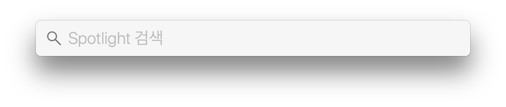
- terminal 입력후
Enter
- 키보드에서
- Launchpad로 열기
- 화면 좌측하단에서 런치패드 클릭 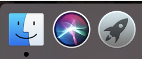
- ‘기타’ 폴더 진입 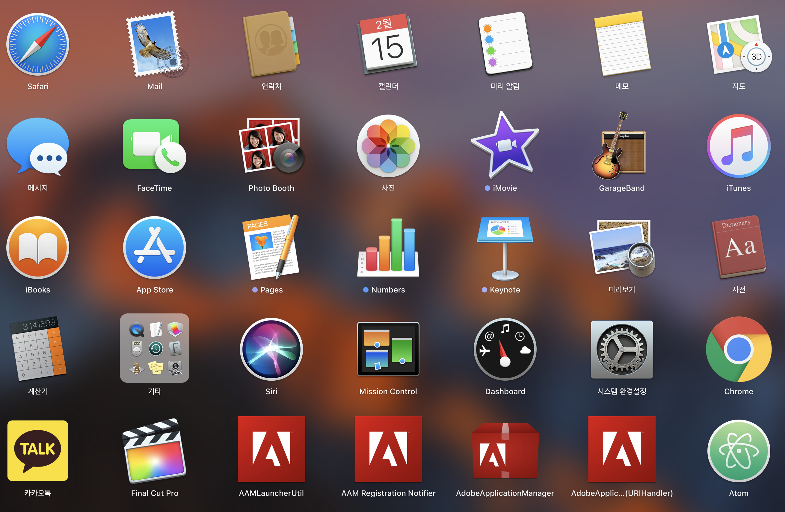
- 터미널 실행 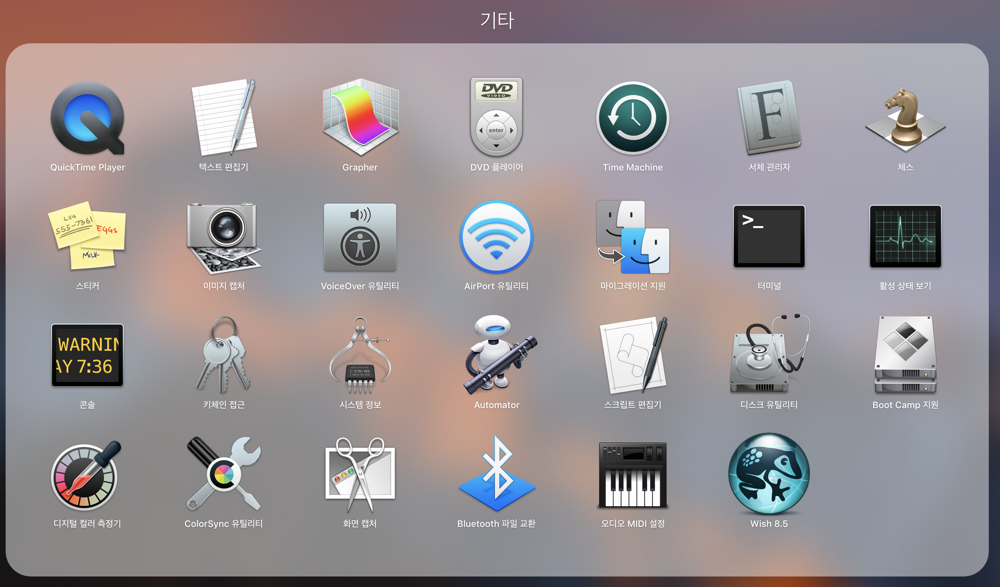
터미널 실행화면
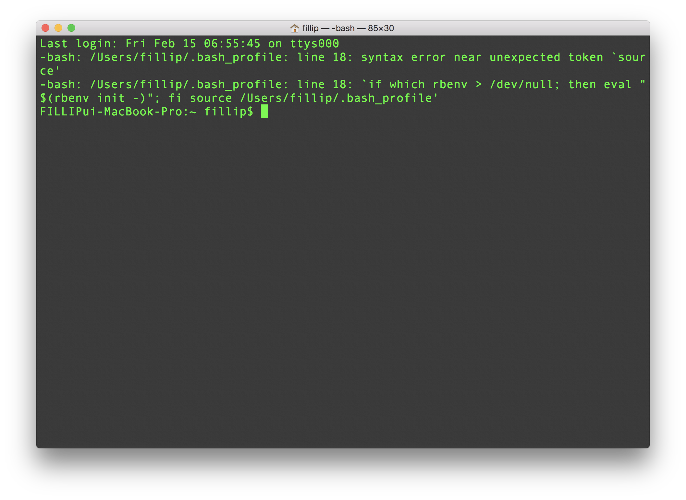
터미널에서 현재 내 경로 위치 찾기
실행된 터미널에서
pwd타이핑 후Enter. 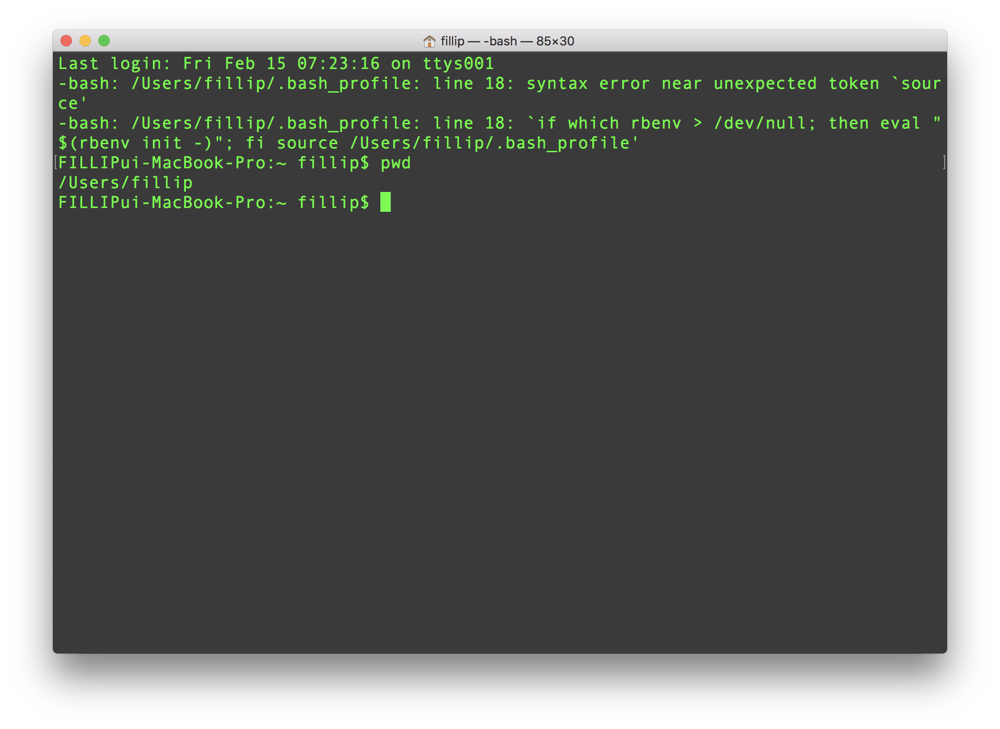 현재 내 경로위치가 /Users/fillip 에 있다는걸 알 수 있다.
현재 디렉토리 안에 있는 파일 확인하기
ls타이핑 후Enter. 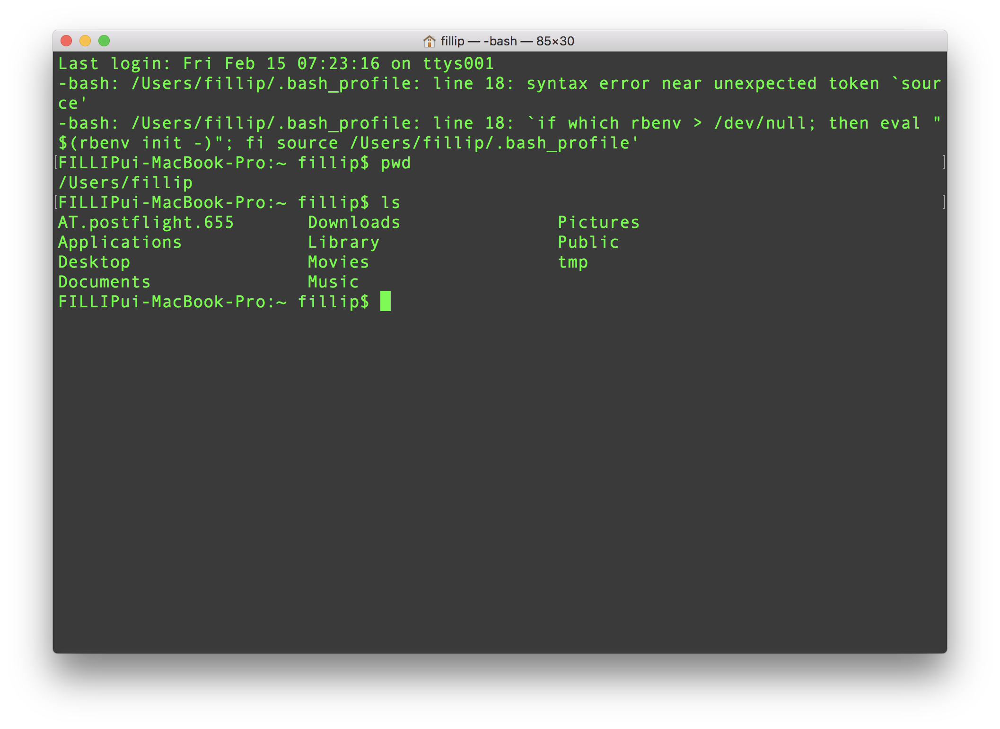AT.postflight.655,Applications,Desktop,Documents,Downloads,Library,Movies,Music,Pictures,Public,tmp. 총 11개 파일이 /Users/fillip 디렉토리 안에 있다는걸 알 수 있다.
디렉토리 이동하기
자 이제 저 파일중
Desktop이름을 가진 폴더로 이동해보자.디렉토리 이동 명령어는
cd이다.
Desktop으로 이동해야 하므로,cd Desktop이라고 입력해보자.
그다음, 현재 위치를 알수있는 명령어pwd로 현재 내 위치를 확인한다. 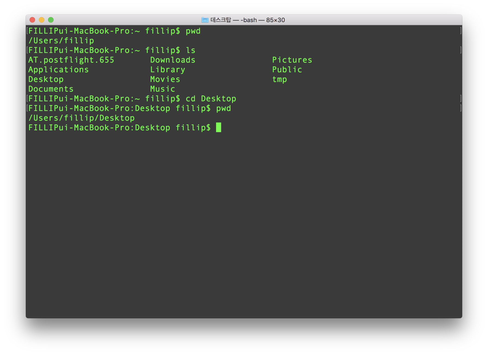 잘 이동 되었고, 이Desktop위치가 우리가 보고있는 모니터 바탕화면이다.
.상위 폴더로 돌아가기
현재
Desktop상위폴더는 우리가 진입전 머물렀던 /Users/fillip 이다. 상위폴더로 돌아가는 명령어는cd ..이다. 반드시 ‘.’ 2개여야 한다.
이후pwd명령어로 현재위치를 본다. 상위폴더 /Users/fillip에 잘 돌아온걸 확인할 수 있다. 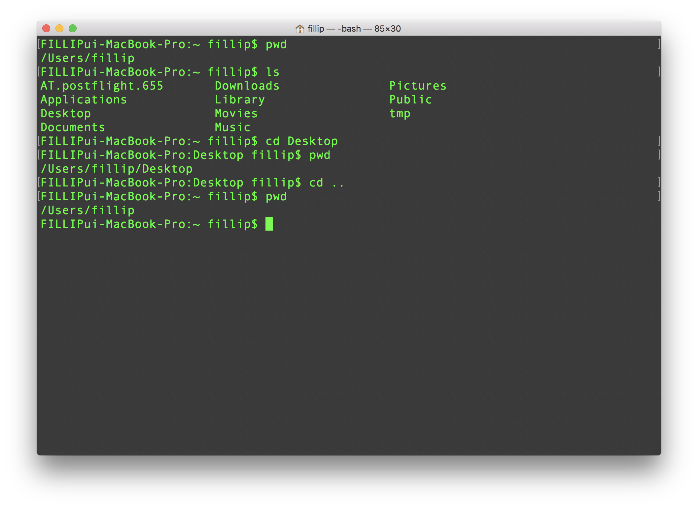
최상위 폴더로 이동
터미널에서
cd /입력 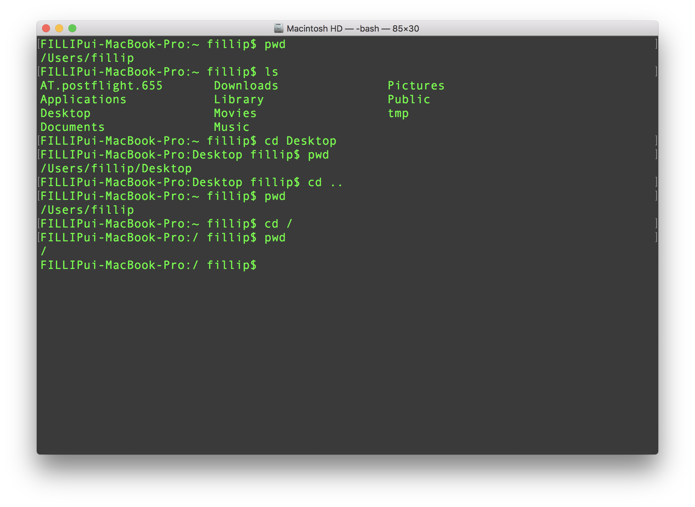정상적으로 진입 했으면
pwd로 현재 위치를 파악하고.
최상위 폴더에는 어떤 디렉토리가 있는지 궁금하기때문에ls입력후 관찰해보자. 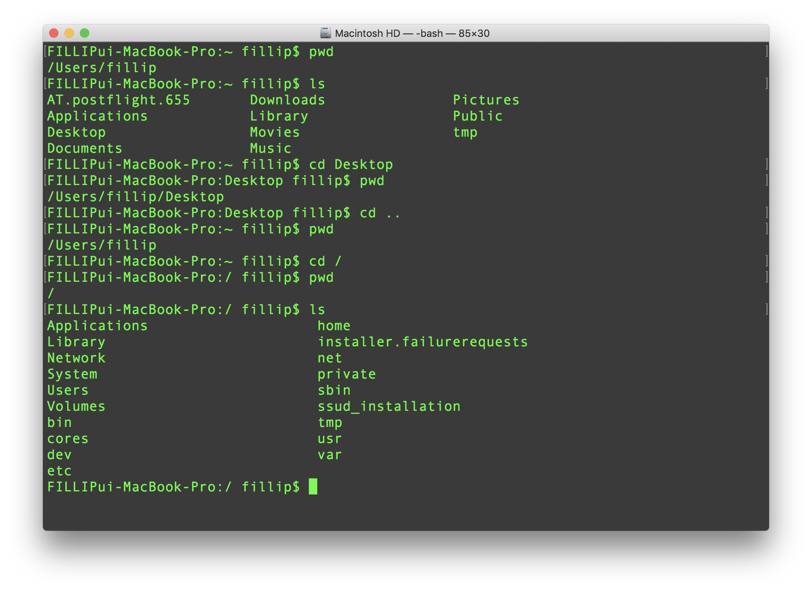
원하는 경로로 한번에 날아가기
터미널 명령어
pwd,ls,cd [dir name],cd ..를 통해 한단계씩 dir를 옮겨다닐 수 있었다.
현재 내 위치가 어디든 상관이 없지만, 예제의 경로가 최상위 ‘/’ 였기때문에 최상위폴더에서 날아가보자.
이 경우는 정확한 경로를 알고 있어야하는데, 아까 한번 갔었던Desktop으로 가보겠다.디렉토리를 바꾼다는 명령어
cd와 +최상위경로부터 목적지까지의 주소
cd /Users/fillip/Desktop이 되겠다. 실행해보자. 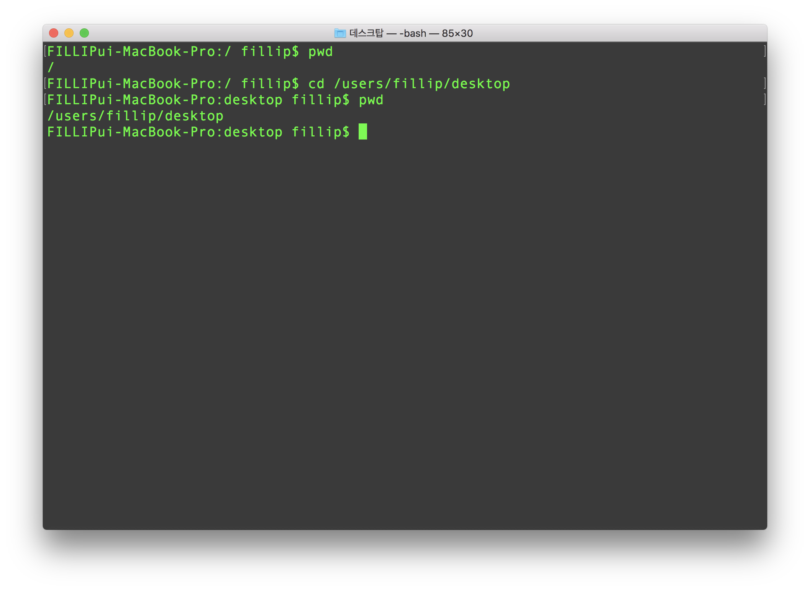
pwd로 확인한 내 위치는 최상위 ‘/’ 였고
cd /users/fillip/desktop을 입력해서 내가 원하는 위치까지 왔다는걸
다시pwd명령어를 통해 알게됐다.
터미널에서 경로 찾기와 이동이 제일 기본이고 중헌것같아서 포스팅 해봤어용
같은 카테고리의 다른 글
Home| CSS 간단한 이해와 여러가지 속성 | 2019. 02. 26 |
|---|---|
| jekyll을 github 저장소에 동기화 시키기. git init, add, commit, push | 2019. 02. 23 |
| 납치태그 meta refresh 리디렉션 소스코드 | 2019. 02. 21 |
| 메타태그 정리 / SEO 검색엔진최적화 / meta tag | 2019. 02. 20 |
| Jekyll Install Mac OS X / 지킬 설치하는 법 for 맥 | 2019. 02. 18 |
| Github에 Jekyll로 RSS feed, sitemap, robots 생성하기 | 2019. 02. 17 |
| 튜너없이 기타 튜닝하는 법 / How to Guitar Tuning / (Sound Track 제공) | 2019. 02. 16 |
| 마크다운 기본 구문 / Markdown Basic Syntax | 2019. 02. 15 |
| 알고있으면 유용하고 간단한 Mac OS Terminal / 터미널 명령어 | 2019. 02. 15 |